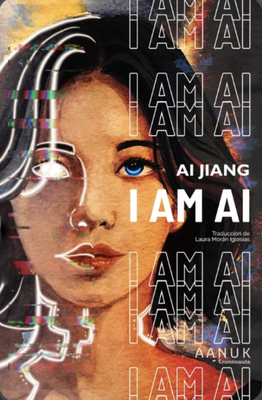

Crononauta · solo digital, 1 nov 2026 · incluida en la suscripción a Aanuk
¿A cuánta humanidad renunciarías para competir con la inteligencia artificial? Ai es una cyborg que trabaja de escritora fantasma haciéndose pasar por un programa de escritura con IA. Ha ido cambiando partes de su cuerpo por eficiencia para sobrevivir en Emit, una ciudad distópica que nunca duerme y que amenaza con dejar atrás a quienes son como ella.
⭐ Goodreads 4,0 (~760 valoraciones). Finalista de los premios Hugo, Nebula y Locus 2024 a mejor novelette, del Aurora y del BSFA (ficción corta). No ganó ninguno. Está en la lista de lecturas recomendadas de Locus y entre las obras destacadas de Best American SF&F 2024. Samit Basu la llama «conmovedora, brillante y 100 % humana». Algunos lectores la ven como un «golpe emocional», pero otros critican que la distopía es tópica y que se alarga para lo que plantea.
Es casi un encargo para ti: IA, precariedad creativa y productividad tóxica en una distopía social, escrita por una autora chino-canadiense inmigrante. Además es corta: se lee en una tarde y te sale gratis con Aanuk. Le resto puntos porque la distopía es poco original y hay lectores que la ven obvia. Pesa más la emoción que la especulación dura.